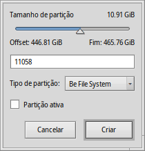
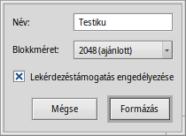

Lemezkezelő (DriveSetup)
Lemezkezelő (DriveSetup)
| Asztalsáv: | ||
| Útvonal: | /boot/system/apps/DriveSetup | |
| Beállítások: | ~/config/settings/DriveSetup |
A Lemezkezelővel partíciókat tudunk létrehozni, törölni vagy formázni. Jelenleg nem képes meglévő partíciókat átméretezni vagy áthelyezni, így ehhez szükséges egy másik programot használni, mint például a GParted LiveCD.

A felső részen a listában kiválasztott eszközön lévő partíciók grafikus megjelenítését látjuk. Alap esetben minden eszközön maximum 4 elsődleges partícióval rendelkezhetünk. Ezt a limitet átléphetjük, amennyiben az egyiket kiterjesztett partícióként hozzuk létre, ami tartalmazhat (elméletileg) bármennyi további logikai partíciót.
A +/- az eszköz előtt a partíciók részletes adatait jeleníti meg.
Színek és ikonok is jelzik a különféle információkat a lemezzel/partícióval kapcsoaltosan.
Az ismert merevlemez, CD, USB, stb. jelölésein túl néhány ikon jelzi a lemez állapotát/típusát:
| A /boot partíció (rendszerindítás) | ||
| Kódolt partíció | ||
| Megosztott hálózati (SMB/NFS) partíció | ||
| Csak olvashatóként csatolt partíció | ||
| Csatolt képfájl (lásd még: diskimage parancs) |
Csatolt partíciók esetében színes sáv jelzi a használt terület mértékét. A szín a partíció típusától függően lehet:
| BFS típusú partíció | ||
| Nem BFS típusú partíció | ||
| Csak olvasható | ||
| Kódolt partíció |
Minden partíció kiválasztható és különféle műveletek végezhetőek vele a helyi menüből vagy a menüből, mint például /, vagy .
Lehetőség van a partíció ára vagy teljes ére is.
 Lemez előkészítése
Lemez előkészítése
Ha nem csak egy partíciót tervezel használni egy nagyobb lemezen, hanem az egész lemezt egyetlen partícióként, például USB vagy memória kártya esetén, akkor elsőként elő kell készíteni a lemezt.
Ezt megteheted, ha kiválasztasz egy lemezt a listában, majd a lemez formátumát a menüből. Az szükséges a klasszikus BIOS/MBR lemez-kezeléshez.
Új partíció létrehozása
Ha a lemezen formázatlan területet találsz, páldául <üres> partíciót, akkor egy újat hozhatsz létre erre a területre a (ALT C) menüjéből.
Ekkor egy ablak jelenik meg, ahol megadhatjuk a partíció méretét és típusát. Válasszuk a típust ha Haiku számára akarjuk létrehozni azt. Itt megjegyzendő, hogy más operációs rendszerek nem feltétlen férnek majd hozzá a létrehozott lemezhez.
Ha elsődleges partíciót hozunk létre, nem pedig egy már meglévőn belül logikait, akkor a fenti ablakban megjelenik egy jelölő négyzet is. Ezt be kell jelölni, ha a Haiku-t szeretnénk indítani a gépen.
Mielőtt használni szeretnénk az újonnan létrehozott partíciót, előtte formázni kell egy adott fájlrendszerre.
Partíció formázása
Csak leválasztott partíciókat lehet előkészíteni a menü használatával. Egy (BFS) feltétlen szükséges a Haiku indításához illetve bármely partíciónál, amin a Haiku adatokat tárol. Kizárólag a BFS partíciók nyújtanak a Haiku számára lehetőséget a lekérdezésekhez illetve a jellemzők kezeléséhez.
Most meg kell adnia a partíció nevét és a blokk-méretét. 2048 bájt blokkonként ajánlott, de ezen kívül kisebb és nagyobb méretet is választhatunk a felhasználástól függően.
Ha nem szeretnénk lekérdezéseket futtatni a későbbiekben, akkor ajánlott a jelölést kikapcsolni, így ezzel némi gyorsulást tapasztalhatunk majd a későbbiekben.